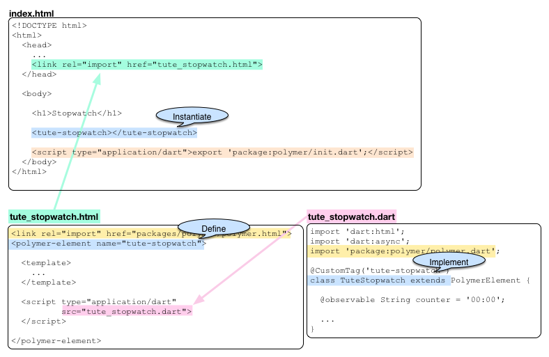
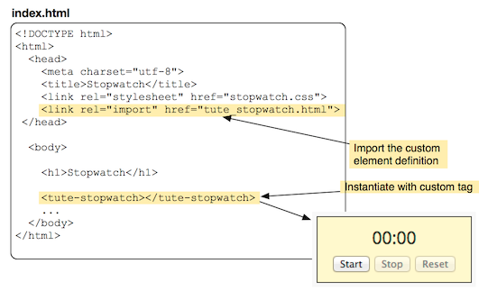
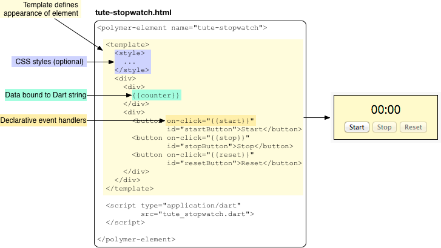
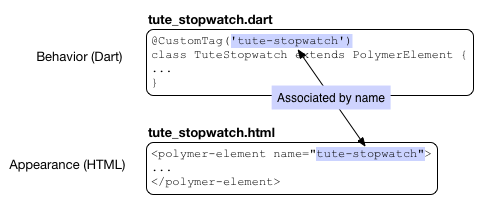
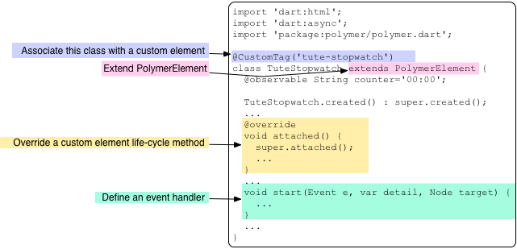
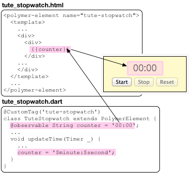
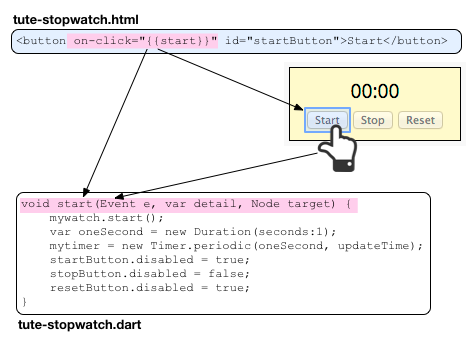
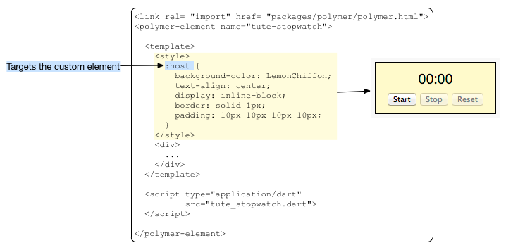

Define a Custom Element
Create a custom HTML element using Polymer
A custom element is an HTML element you can define yourself, encapsulating appearance or behavior (or both) within semantically meaningful HTML.
Custom elements are one feature of Polymer, a new type of library for the web based on Web Components. The Dart implementation of Polymer is called polymer.dart.
- An example
- Installing polymer.dart
- Including polymer.dart in your application
- Instantiating a custom element
- Defining a custom element
- Providing a template for the custom element
- Providing a script for the custom element
- Overiding life-cycle methods
- Using data binding
- Setting up event handlers declaratively
- Styling a custom element
- Deploying an app that uses Polymer
- Other resources
- What next?
An example
In the example running below, the LemonChiffon area outlined in black is a custom element implemented using Polymer.
Try it! Start and stop the stopwatch. Reset the stopwatch to 00:00 using the Reset button.
Here’s how to use this custom element in an HTML page:
- Import the HTML file that has the custom element definition
(
tute_stopwatch.html). - Use the name of the element as an HTML tag
(
<tute-stopwatch>). - Initialize Polymer, which you can do using Polymer’s
init.dartfile.
For example:
<link rel="import" href="tute_stopwatch.html"> ... <tute-stopwatch></tute-stopwatch> <script type="application/dart">export 'package:polymer/init.dart';</script>
The counting text, the three buttons along with their actions, and the style are all contained within the custom element. The definition of the custom element encapsulates and hides the implementation details, which as the user of the element, you care nothing about.
With custom elements, you can easily create new kinds of elements that have semantically meaningful tags and that are easy to share, reuse, and read.
Overview of the example files
Three main source files implement the Stopwatch example:
- index.html
- The primary HTML file for the app. It imports script files for Polymer, and the HTML file for the custom element. It instantiates the custom element.
- tute_stopwatch.html
- The HTML code that defines the custom element. It imports the HTML file for Polymer.
- tute_stopwatch.dart
- The Dart class that implements the custom element.
The following diagram shows the structure of the example app and its use of custom elements:
- Import Polymer
- Import custom element definition
- Define, implement, and instantiate custom element by name
- Initialize Polymer
- Associate Dart class with custom element definition

Installing polymer.dart
To use the features provided by polymer.dart, you need to install the Polymer package. If you are unfamiliar with installing packages, refer to Install Shared Packages, which describes the process in detail.
In brief, to install the Polymer package:
-
In the application’s
pubspec.yamlfile, add the package to the list of dependencies by adding the package name,polymer, to the list.name: stopwatch description: A sample application dependencies: polymer: ">=0.15.1 <0.17.0"
-
Run
pub get, which recursively installs the polymer.dart package and all the packages that it depends on. If you are using Dart Editor, when you save pubspec.yaml the editor automatically runspub getfor you. If you are using command-line tools, you can use the commandpub get.
Including polymer.dart in your application
To use polymer.dart features such as custom elements, you need to include Polymer in both the HTML side and the Dart side of your app.
-
In the HTML file for each custom element, import
packages/polymer/polymer.htmlat the top of the file, before any <polymer-element> tag:... <link rel="import" href="packages/polymer/polymer.html"> <polymer-element name="tute-stopwatch"> ...
-
In your Dart code, import the Polymer library:
import 'dart:html'; import 'dart:async'; import 'package:polymer/polymer.dart'; ...
Instantiating a custom element
For most custom elements, you create an instance
using the name of the custom element,
just as you would any normal HTML tag.
In this example, the tag name is tute-stopwatch.

Using best practices,
the custom element definition is in a separate file.
Use link [rel="import"] to import the HTML definition file as shown.
Instantiating a type extension custom element—a
custom element that inherits from a native element—is slightly different.
For this kind of custom element,
you use the native element name—for example, li—and
then add an is attribute that specifies the custom element name.
For example, here’s how you instantiate a my-li element
that extends the <li> element:
<li is="my-li"> Item #2 (custom list item) </li>
Defining a custom element
The definition for the <tute-stopwatch> element is in tute_stopwatch.html. A custom element definition should be in its own source file so that it can be included by other files. An HTML file that contains the definition for a custom element does not need <html>, <head>, or <body> tags.
To define a custom element, use the <polymer-element> tag and provide a name.
<polymer-element name="tute-stopwatch"> ... </polymer-element>
A custom element name must have at least one hyphen (-).
We advise using an identifiable prefix to
avoid naming conflicts with elements shared by others
and to help identify the project from which the element originates.
For example, for tutorial custom elements, we use the prefix tute.
Within the <polymer-element> tag, you can provide a template (appearance) and a script (behavior). UI widgets, like our Stopwatch example, typically have both a template and a script, but neither is required. A custom element with a script and no template is purely functional. A custom element with a template and no script is purely visual.
<polymer-element name="tute-stopwatch">
<template>
...
</template>
<script type="application/dart" src="tute_stopwatch.dart"></script>
</polymer-element>
- <template>
- Describes the custom element's structure—its user interface. The template comprises any valid HTML code within the <template> tag. When the custom element is instantiated, the instance is created from the template. The template can include CSS styles within a <style> tag.
- <script>
-
Specifies a Dart script. For custom elements, the Dart script is a Dart class that implements the behavior of the element. The class typically overrides some life-cycle methods and provides event handlers that join the UI with its programmatic behavior. In this example, the script is in tute_stopwatch.dart. The script type for custom elements must be “application/dart”.
Providing a template for the custom element
Here’s the template code for the tute-stopwatch element:

The tute-stopwatch template uses a <style> tag, which is optional. These styles are scoped; they affect only the appearance of the custom element and the elements it contains. More about scoped CSS in Styling a custom element.
The rest of the code within the <template> tag is normal HTML, with two exceptions:
{{expression}} |
Uses a Polymer syntax to bind Dart data to the HTML page. The double curly braces are commonly known as a “double mustache”. |
on-click |
Uses Polymer declarative event mapping, which allows you to set up event handlers for a UI element. on-click sets up an event handler for mouse clicks. Polymer has mappings for other event types, such as on-input for changes to text fields. |
Let’s take a look at the structure of the Dart code before we get into the details of data binding, event handlers, and scoped CSS.
Providing a script for the custom element
On the Dart side, a class implements the behavior of the custom element.
You associate the Dart class with the custom element using the @CustomTag
annotation and the name of the custom element.

This diagram gives an overview of the TuteStopwatch class:

Classes that back Polymer elements are usually subclasses of PolymerElement, but they don’t have to be. They can extend any other HtmlElement subclass, but they must follow a couple of rules:
- Implement Polymer and Observable. The easiest approach is to use Polymer and Observable as mixins.
- Provide a constructor named
CustomElement.created()that invokessuper.created()and (if using Polymer as a mixin)polymerCreated().
As an example, here’s the code for a custom subclass of LIElement:
@CustomTag('my-li')
class MyListElement extends LIElement with Polymer, Observable {
MyListElement.created() : super.created() {
polymerCreated();
}
}
Overriding life-cycle methods
Your custom element’s backing class can respond to life-cycle milestones
by overriding life-cycle methods.
For example, the TuteStopwatch class overrides the attached()
method—which is called when the element is inserted
into the DOM—to initialize the app.
The start() method is an event handler for the Start button.
The event handler is declaratively connected to the button.
Refer to Setting up event handlers declaratively to see how.
A custom element has a constructor and three life-cycle methods that it can override:
CustomElement.created() |
The constructor used when creating an instance of a custom element. |
attached() |
Called when an instance of a custom element is inserted into the DOM. (Previously named enteredView.) |
detached() |
Called when an instance of a custom element is removed from the DOM. (Previously named leftView.) |
attributeChanged() |
Called when an attribute, such as class, of an instance of the custom element is added, changed, or removed. |
You can implement the constructor, if necessary, and override any of the life-cycle methods. The constructor or overriding method must call the superclass constructor or method first.
The Stopwatch app overrides the attached() method because it
needs a reference to each of the three buttons
so that it can enable and disable them.
When a tute-stopwatch custom element is inserted into the DOM
the buttons have been created, so the references to them
will be available when the attached() method is called.
void attached() {
super.attached();
startButton = $['startButton'];
stopButton = $['stopButton'];
resetButton = $['resetButton'];
stopButton.disabled = true;
resetButton.disabled = true;
}
The code uses automatic node finding, a Polymer feature,
to get a reference to each button.
Every node in a custom element that is tagged with an id attribute
can be referenced by its ID using the syntax: $['ID'].
Using data binding
In the HTML definition of a custom element,
use double curly brackets to embed Dart data into the webpage.
In your Dart code, use the @observable annotation
to mark the embedded data.
Here, the data is a string called counter.

The tute-stopwatch element uses a periodic
Timer
to fire an event every second.
When the Timer fires, it calls the updateTimer() method,
which modifies the counter string.
Polymer takes care of updating the HTML page with the new string.
This type of binding is called one-way data binding because the data can change only on the Dart side. Polymer also supports two-way data binding. In two-way data binding, when data changes on the HTML side—for example with an input element—the value in the Dart code changes to match. For more information about two-way binding, plus examples of using it with a variety of HTML5 widgets, check out the Forms tutorial section Two-way data binding using Polymer.
You can use expressions within the double curly brackets. Polymer expressions provide the default syntax. Examples of allowable expressions include:
{{myObject.aProperty}} |
Property access. |
{{!empty}} |
Operators, like the logical not operator. |
{{myList[3]}} |
List indexing. |
Setting up event handlers declaratively
This example has three buttons, each with an event handler that is written in Dart, but attached to the button declaratively from HTML.

In HTML, use the on-click attribute
to attach a mouse click handler to an HTML element.
The value of the attribute must be the name of a method
in the class that implements the custom element.
When the user clicks the button, the specified method is called
with three parameters:
-
An Event that contains information about the event, such as its type and when it occurred.
-
The detail object can provide additional, event-specific information.
-
The Node that fired the event—the Start button in this case.
You can attach event handlers for other kinds of events.
For example, you can use on-input to handle events
for input text elements when the text changes.
Refer to Declarative event mapping for further details.
Styling a custom element
You can optionally include CSS styles for your custom element that apply only to the contents of the custom element.

:host refers to the custom element itself and has the lowest specificity.
This allows users to override your styling from the outside.
You can style elements within the custom element using
the appropriate selectors for those elements.
You don’t need to worry about naming conflicts on the page.
Any CSS selectors used within the <style> section
apply only to those elements within the template.
For further details about styling custom elements, refer to A Guide to Styling Elements
Deploying an app that uses Polymer
To convert your app to JavaScript
that you can deploy to the web,
you need to use the Polymer transformers.
You can test your app’s JavaScript version using
either Dart Editor’s Run as JavaScript command
or the pub serve command.
To produce deployable files,
use the pub build command.
Specifying transformers
Add a transformers entry to your app’s pubspec.yaml file
to specify the Polymer transformers:
... dependencies: polymer: ">=0.15.1 <0.17.0" transformers: - polymer
By default, Polymer assumes that all HTML files under web can be
entry points—files that define pages to be served,
rather than elements to be included in pages.
You can use an entry_points field to limit the HTML files that
the Polymer transformers process.
For example:
...
transformers:
- polymer:
entry_points: web/index.html
For more information on using the Polymer transformers, see the Polymer package documentation.
Testing the JavaScript version
If you’re using Dart Editor, you can test the JavaScript version in your default web browser by right-clicking your app’s main file (for example, web/index.html) and choosing Run as JavaScript. Dart Editor runs the Polymer transformers, compiles your app to JavaScript, and opens a browser tab for your running app. You can copy the URL from that tab into any other browser that you’d like to test.
Alternatively, run pub serve
on the command line,
from the app’s top directory.
That command runs the transformers
and starts up an HTTP server to serve the app.
The command’s output gives you a URL that you can
copy and paste into a browser window.
If you change the app’s files and reload the window,
you see the updated version of the app.
Generating JavaScript files
When you’re ready to generate files,
run pub build—either at the command line or
using Dart Editor—to
generate the files your app needs
to run in any modern browser.
The generated files appear in the
build directory, alongside your pubspec.yaml file.
Other resources
Use these other resources to learn more about Polymer:
-
The polymer.dart homepage provides information specific to the Dart port of the Polymer project.
-
The Polymer project website polymer-project.org contains information about the Polymer project as a whole.
What next?
Two-way data binding with Polymer in the tutorial about forms shows how to use two-way data binding with various types of input elements such as text fields, color pickers, and so on.
Check out these other tutorial examples that use Polymer:
- its_all_about_you
- slambook
- count_down
The next tutorial, Fetch Data Dynamically, shows you how to fetch data and use JSON to encode and decode that data.